Algebra Booliana
Na álgebra booliana, existe apenas duas condições possíveis que pode ser atribuída para uma varável, ou ela é 0 ou 1 e nela, existem 3 operações básicas:
Ou (soma lógica)
Essa operação resulta em 1 caso uma das variáveis seja igual a 1. Em uma relação com variáveis A e B pode ser entendido como se a saída será igual a 1 se ou A ou B ou os 2 forem igual a 1. Desse modo infere-se que essa operação só retornará 0 caso todas as variáveis de entrada forem igual a 0.
Essa operação também pode ser representada com “+” ( A + B). Assim, temos a seguinte tabela verdade para duas e três variáveis:
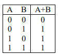 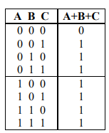A partir da tabela verdade com 3 variáveis, é possivel perceber a propriedade associativa da função OU, em que é possível encontrar o resultado de A + B e depois “soma-lo” com C. Além desse, percebe-se também a propriedade comutativa, a qual implica que não a importa a ordem das “somas”, seja A + B + C ou C + A + B, o resultado será o mesmo.
Operação E (multiplicação lógica):
Nessa operação, a saída será 0 caso uma das variáveis seja igual a zero e será 1 caso todas seja igual a 1. Desse modo, em uma situação de duas variaveis, pode se enteder que a saída será 1 caso a variavel A e a variavel B sejam igual a 1. Essa operação também pode ser representada com “ * ”.
Assim, temos a seguinte tabela verdade para duas e três variáveis:
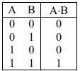 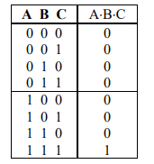Complementação (negação, inversão)
Essa operação apenas retorna o complementar da variável de entrada. Assim se a variavel for igual a 1, a operação retorna 0, e se for 0, retorna 1. Ela pode ser representada como, “-A” (complemento da variável A e sua tabela verdade é:
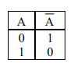Propriedades
A partir dessas noções das operações, obtemos as seguintes propriedades:
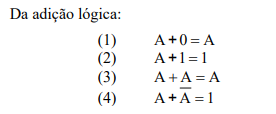 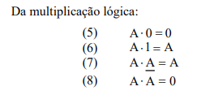 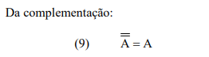 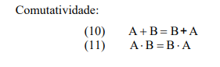 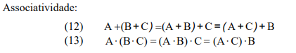 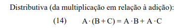Além dessas, também temos o teorema de Morgan, o qual nos diz que:
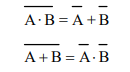